Travel Mate.
Group travel planning app
- App Design
- Cross-functional Teamwork

With a team of designers and developers, I helped build Travel Mate, an app that makes planning a trip to Korea with friends simple. Available in English and Korean.
Planning with friends means switching between apps and endless back-and-forth.
One app to search places, build shared itineraries and track expenses together.
A functional web and mobile product, refined over 16 iterations.
At a glance
Research
Surveys, user data and benchmarking of comparable apps’ UI and information architecture.

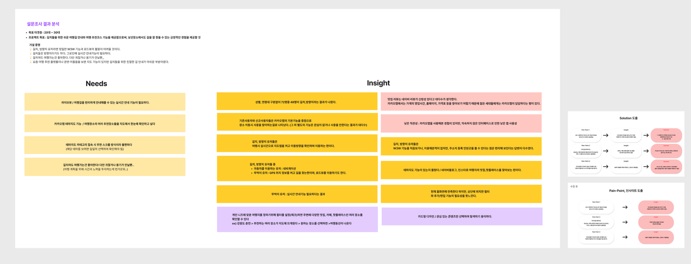
From insight to decision
Insight
Design decision
Travel tools are split across many platforms
Search restaurants, hotels and attractions in one app
Group plans change through endless messages
Shared routes and daily itineraries
Shared costs are hard to keep track of
Built-in shared expense tracking
Information architecture


Visual system
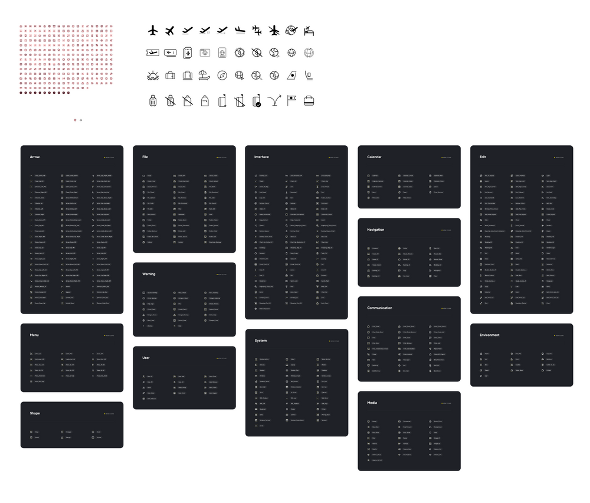

My role: illustration & key screens
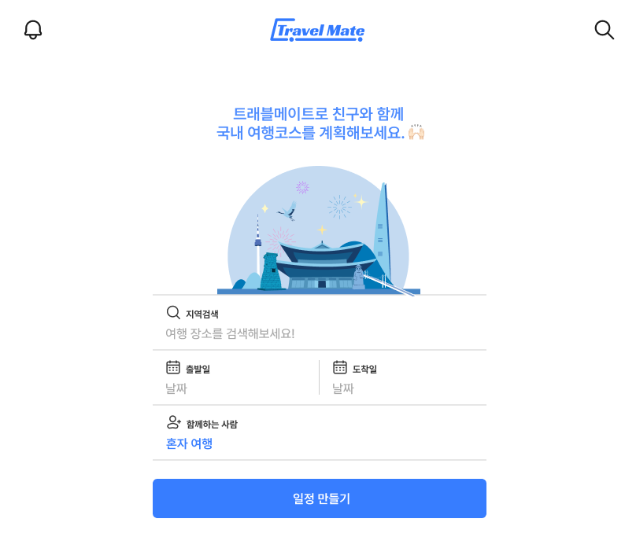
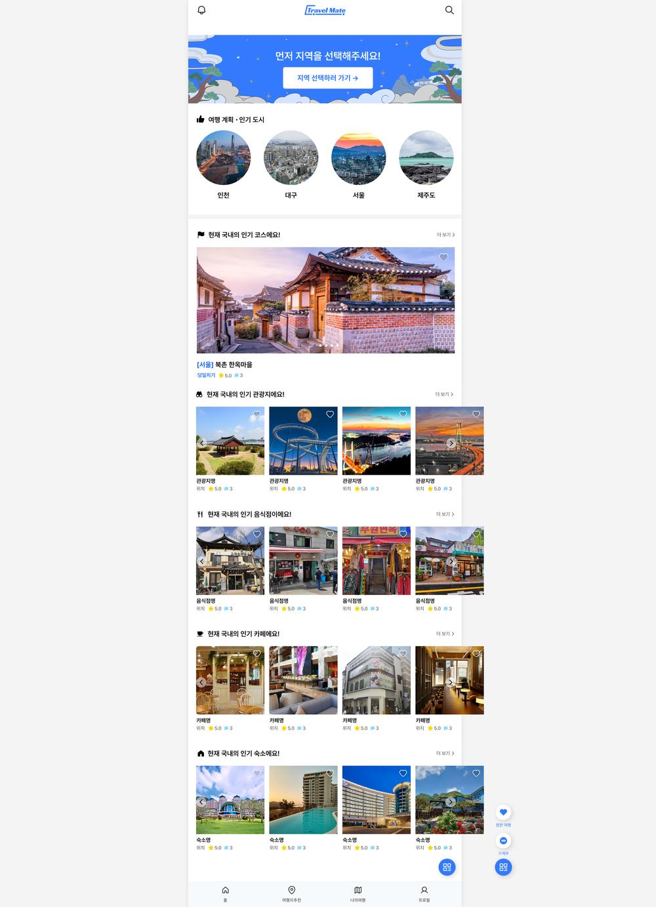
Final screens
100+ screens designed with two other UX designers.
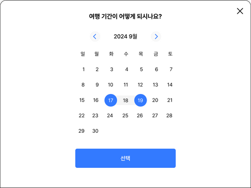
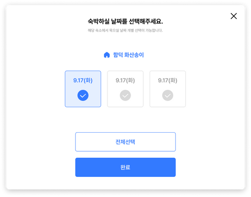
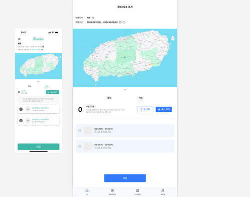
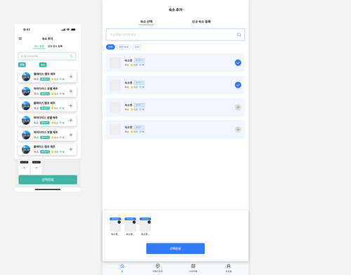
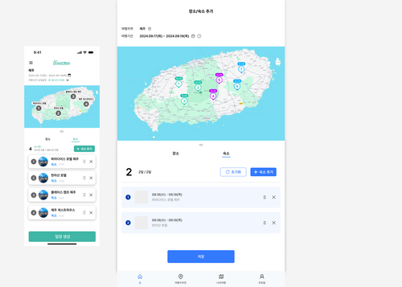
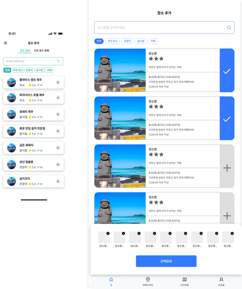
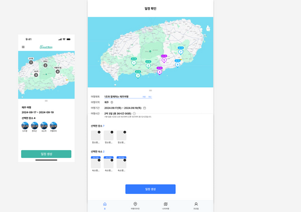
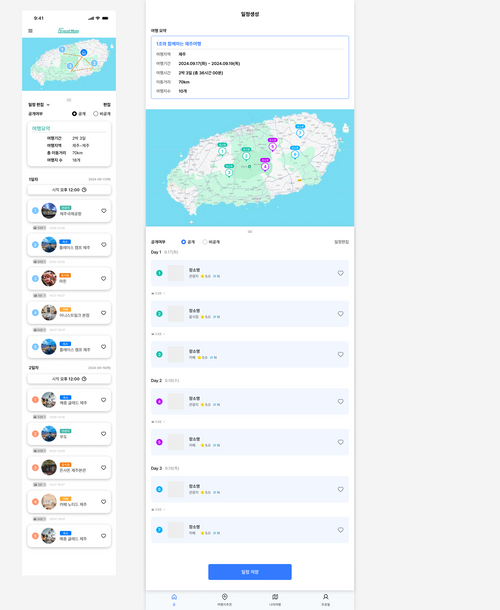
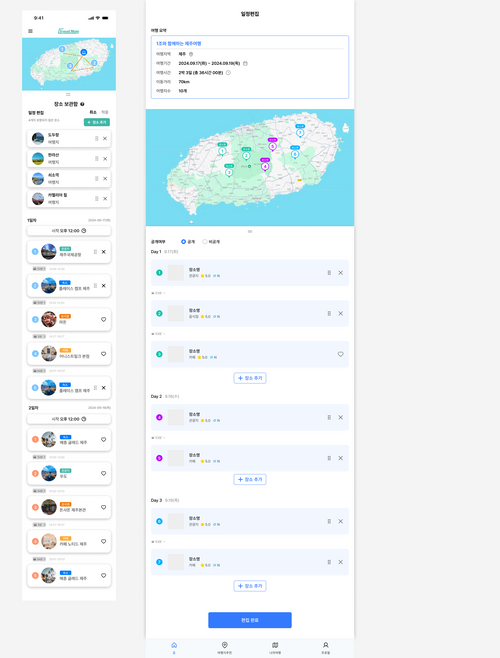
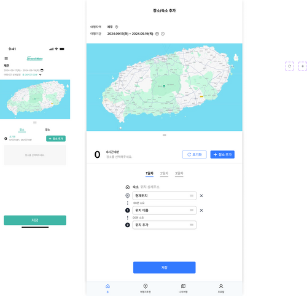
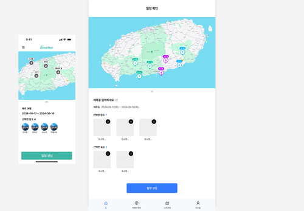
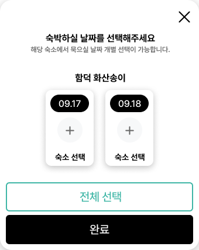
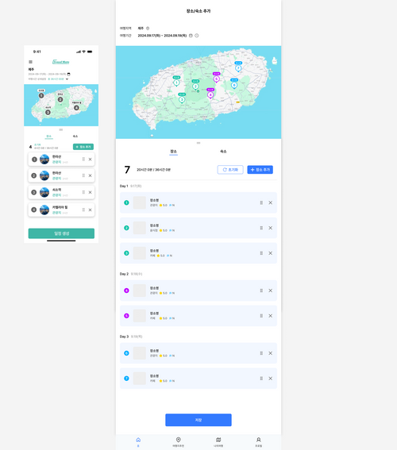
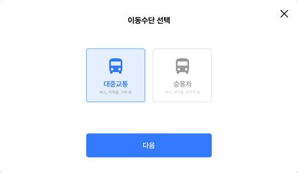
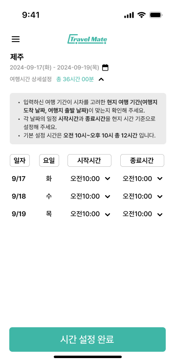
Scroll sideways →
Open full design sheets


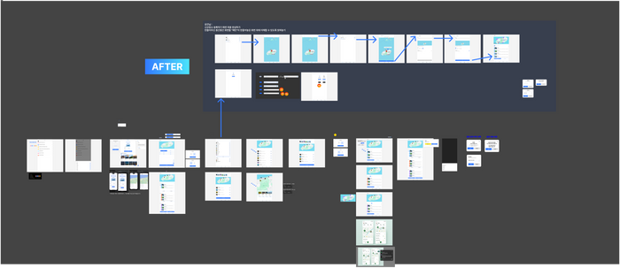


Process
- 01ResearchSurveys, data, benchmarking
- 02Visual systemIcons & moodboard
- 03IAHome, plan, spots, profile
- 04Wireframes16 iterations
- 05Final screens100+ pages
- 06NextPartnerships & integrations
Next stepsPartner integrations with maps, restaurants and hotels, and expense splitting for groups.